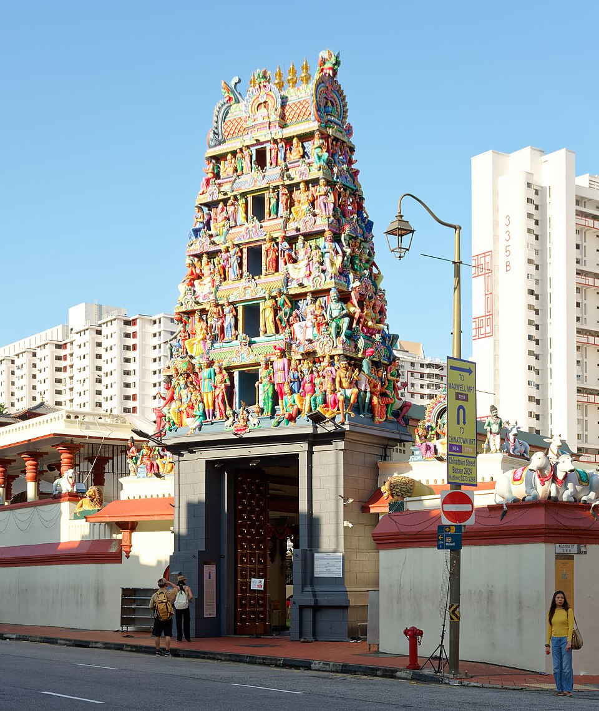
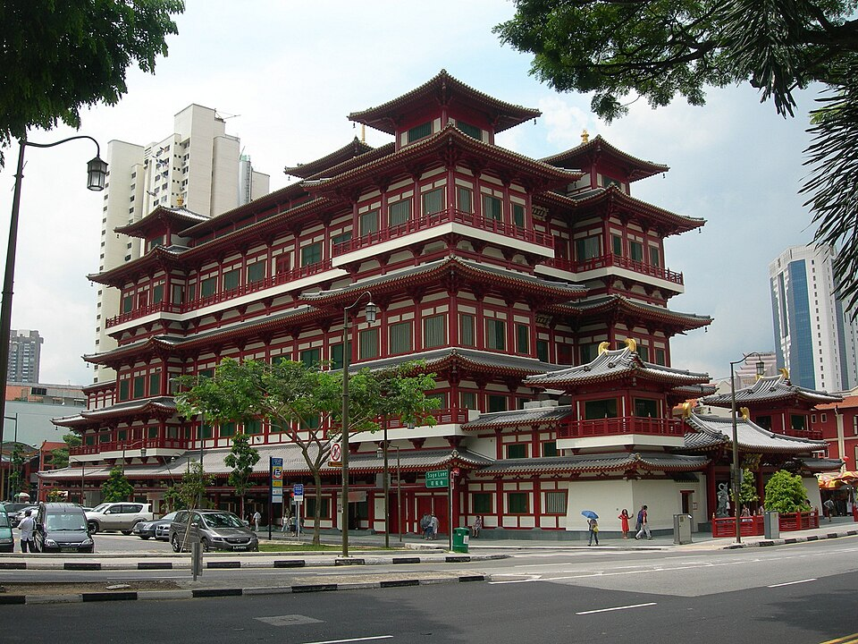

Singapore
Chinatown & CBD
a town of Singapore — sights & hawker food, sourced
16 places · 1 area · every one sourced, pinned and status-checked · last checked . Ordered by tier, then by number of named sources. How we choose
chicken rice · laksa · Sri Mariamman Temple
Start with

Chinatown & CBD 16 places · area 1 of 1
-
1 Must see within Chinatown & CBD · Hainanese Chicken Rice
Tian Tian Hainanese Chicken Rice
Singapore's most famous chicken rice stall; Michelin Bib Gourmand, feted by Bourdain & Ramsay.
#01-10/11 Maxwell Food Centre, 1 Kadayanallur Street
Recommended by , ,
-
2 Must see within Chinatown & CBD · Bak Kut Teh
Song Fa Bak Kut Teh
Peppery Teochew bak kut teh; among only 17 stalls to hold a Michelin Bib across all 10 SG editions.
11 New Bridge Road, #01-01
Recommended by , ,
-
3 Must see within Chinatown & CBD · Chilli Crab
JUMBO Seafood (Riverside Point)
Singapore's most famous chilli crab name (since 1987); sweet-spicy gravy mopped up with mantou.
#01-01/02 Riverside Point, 30 Merchant Road, Clarke Quay
Recommended by , ,

“Gopuram of Sri Mariamman Temple, Singapore, 20240122 0842 2942” by Jakub Hałun, CC BY 4.0, via Wikimedia Commons — resized to 500 and 960 px wide 4 Must see within Chinatown & CBD
Sri Mariamman Temple
Singapore's oldest Hindu temple (1827); a National Monument with a vivid gopuram tower.
Look for Temple
244 South Bridge Road, Chinatown
Recommended by ,

“Buddha Tooth Relic Temple and Museum” by Riction at English Wikipedia, CC BY 3.0, via Wikimedia Commons — resized to 500 and 960 px wide 5 Must see within Chinatown & CBD
Buddha Tooth Relic Temple & Museum
Tang-style Buddhist temple (2007) housing a sacred tooth relic in a 3,500 kg gold stupa.
Look for Temple
288 South Bridge Road, Chinatown
Recommended by ,
-
6 Must see within Chinatown & CBD · Laksa
Famous Sungei Road Trishaw Laksa
Michelin Bib Gourmand three-peat; heritage cut-noodle laksa eaten spoon-only.
#02-66 Hong Lim Food Centre, 531A Upper Cross Street
Recommended by ,
-
7 Worth the detour within Chinatown & CBD
Thian Hock Keng Temple
Singapore's oldest Hokkien temple (1839) dedicated to Mazu; a National Monument built without nails.
Look for Temple
158 Telok Ayer Street, Chinatown
Recommended by ,
-
8 Worth the detour within Chinatown & CBD
Chinatown Heritage Centre
Recreated 1950s shophouse interiors telling the story of Chinatown's early immigrant tenants.
Look for Museum
48 Pagoda Street, Chinatown
Recommended by ,
-
9 Worth the detour within Chinatown & CBD · Chinese
Nai Ek Roll Noodle (Nai Ek Kuay Jub)
A Chinatown Bib Gourmand mainstay for aggressively peppery rolled-noodle soup and crispy pork.
Soi Yaowarat 9, Yaowarat (Chinatown), Bangkok, Thailand
Recommended by ,
-
10 Worth the detour within Chinatown & CBD · Hainanese Chicken Rice
Ah Tai Hainanese Chicken Rice
The rival stall a few doors from Tian Tian; ex-Tian Tian chef, legendary dark soy & chilli.
#01-07 Maxwell Food Centre, 1 Kadayanallur Street
Recommended by ,
-
11 Worth the detour within Chinatown & CBD · Wok Noodles
Tai Wah Pork Noodle
The other half of the Tai Hwa/Tai Wah lineage; Michelin Bib bak chor mee at Hong Lim.
#02-16 Hong Lim Food Centre, 531A Upper Cross Street
Recommended by ,
-
12 Worth the detour within Chinatown & CBD · Hawker
Ji Ji Noodle House
Upgraded from Selected to Michelin Bib Gourmand in the 2025 guide; old-school wanton mee.
#02-48/49 Hong Lim Food Centre, 531A Upper Cross Street
Recommended by ,
-
13 Worth the detour within Chinatown & CBD · Malay
Best Satay 7 & 8 (Lau Pa Sat Satay Street)
The most popular stalls on Lau Pa Sat's evening Satay Street, grilled over charcoal.
Boon Tat Street / Lau Pa Sat, 18 Raffles Quay
Recommended by ,
-
14 Worth the detour within Chinatown & CBD · Kaya Toast
Ya Kun Kaya Toast (Far East Square)
Founded 1944; the flagship still grills wafer-thin charcoal kaya toast, SG's kopitiam icon.
#01-01 Far East Square, 18 China Street
Recommended by ,
-
15 Deep cut within Chinatown & CBD · Chendol
Old Amoy Chendol
Artisanal chendol with cold-pressed coconut milk & charcoal-brewed gula melaka, from $2.
#02-008 Chinatown Complex Food Centre, 335 Smith Street
Recommended by ,
-
16 Deep cut within Chinatown & CBD · Kaya Toast
Tong Ah Eating House
In Keong Saik since 1939; one of the very few still doing old-school thrice-toasted kaya toast.
35 Keong Saik Road, Chinatown
Recommended by ,
How we choose
Every place is recommended by named sources (review-aggregator star ratings never count as the recommender), pinned to its door from a published coordinate, and status-checked. Closed places stay, flagged, so you know they’re gone.
- Must see
- The places to plan a visit around — graded within each area, not across the city.
- Worth the detour
- Strong picks, worth going out of your way for.
- Deep cut
- For the curious: smaller, odder, more local.
Within each area, places are ordered by tier, then by number of named sources — never by popularity. Numbers on the cards match the pins on the map. No ratings, prices or opening hours are shown, because the guide doesn’t hold verified ones.
4 sights and 12 places to eat in Chinatown & CBD, a town of Singapore, each traceable to the source that named it (Michelin, local news & vetted local/viral creators). Renders in soft pastel, light or dark.